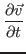

post
Using LATEX with Hakyll
This HTML is generated from LATEX source via latex2html and then embedded into Hakyll-hosted blog. The use of LaTeX will allow us the use of complex expressions e.g.
|  | (1) |
This attempt seems to basically working although there are few glitches (like the duplicated title you can see.) Fixing these should be some cumbersome script work but should not be too hard.
I am further trying to use this technology in combination with Haskell DSLs such as authoringhttp://hackage.haskell.org/package/authoring and units [1] , to write physical discussions in Haskell and LaTeX.
Bibliography
- 1
-
T. Muranushi and R. A. Eisenberg.
Experience report: Type-checking polymorphic units for astrophysics research in haskell.
In 2014 ACM SIGPLAN Symposium on Haskell. ACM, 2014.
The content of this page is also availabe as a pdf document: Using LATEX with Hakyll./post.pdf.
About this document ...
Using LATEX with HakyllThis document was generated using the LaTeX2HTML translator Version 2008 (1.71)
Copyright © 1993, 1994, 1995, 1996,
Nikos Drakos,
Computer Based Learning Unit, University of Leeds.
Copyright © 1997, 1998, 1999,
Ross Moore,
Mathematics Department, Macquarie University, Sydney.
The command line arguments were:
latex2html -no_navigation -split 0 post.tex
The translation was initiated by nushio on 2015-07-03
nushio 2015-07-03